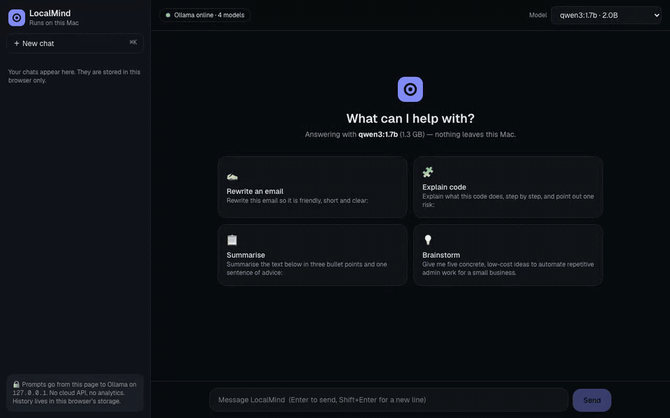
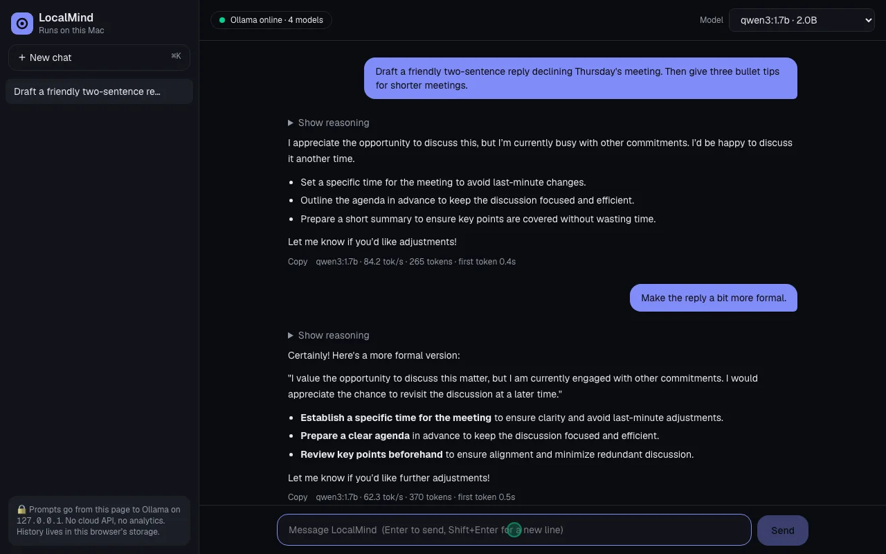
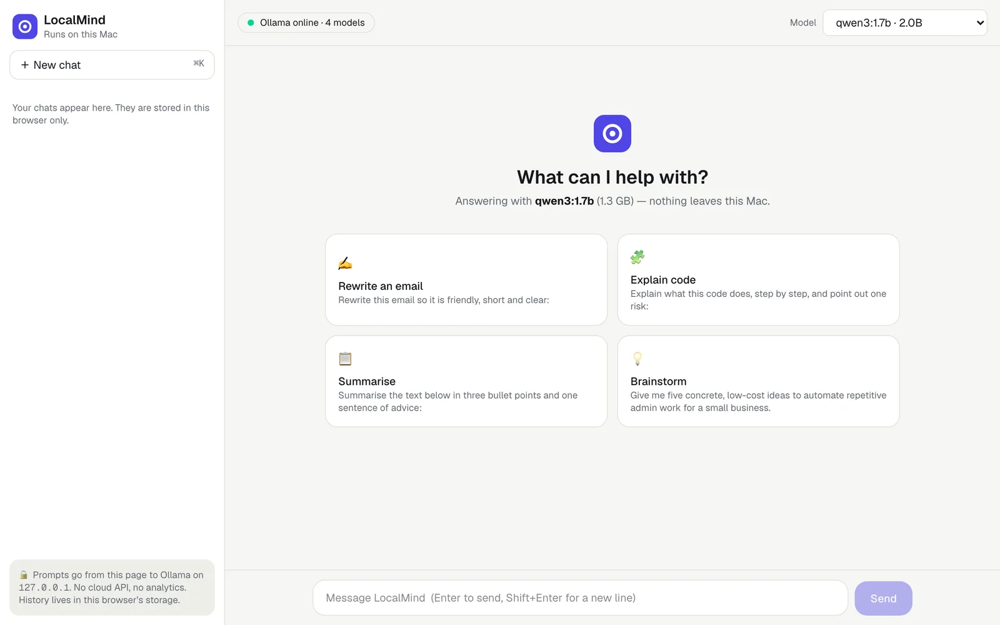
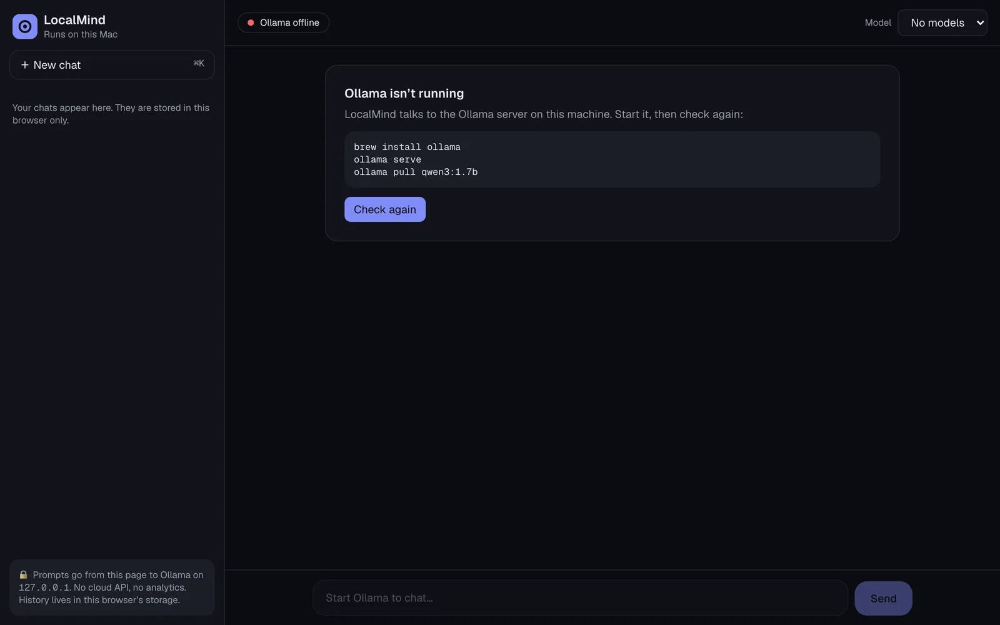

Some text should never leave your Mac.
A contract, a customer email, unreleased code. Ollama runs good models locally, but its terminal is not where you want to rewrite an email. LocalMind is the small, honest UI on top: tokens stream in, follow-ups remember the conversation, and the browser only ever talks to a server you run, which only ever talks to Ollama.

Why it exists
Cloud chat is the wrong place for the text you are most careful with.
The easy answer is to paste it into a hosted chatbot. The careful answer is a local model, but then you are back in a terminal with no history, no follow-ups and no feel for how fast the model really is.
LocalMind gives a local model the interface people expect, and keeps the promise honestly: no analytics, no external fonts at runtime, no cloud calls. Stop really stops generation on the Mac, and when Ollama is down you get the exact command to fix it instead of a blank screen.
How it works
Small on purpose, careful where it counts
Seven behaviours that make a local model pleasant to use.
Streams and really stops
Tokens appear as they are generated. Stop (or Esc) aborts generation on the Mac, not just in the UI.
Remembers
Every message is sent with the conversation so far, so a follow-up like “make it more formal” works.
Shows its reasoning
Reasoning models such as Qwen3 and DeepSeek-R1 get a collapsible block instead of raw think-tags, even while streaming.
Knows your models
The picker lists what is actually installed, smallest first; embedding and cloud-only models are hidden.
Measures
Tokens per second, token count and time to first token under each answer, as reported by Ollama.
Fails helpfully
Ollama down or a model missing? You get the command to start or pull it.
One request, three hops, all on 127.0.0.1
Screens
What it looks like
Captured from the real app on localhost.



Evidence
What is real, and what is not
REAL Built and verified
- Streaming, stop, conversation memory, reasoning view, installed-model picker and history all work
- CI runs tests, lint, typecheck and build on every push
- The recording and screenshots come from the running app
SIMULATED Mocked or not built yet
- No authentication: it is built for localhost and must not be exposed to a network
- History lives in this browser's localStorage, newest 50 kept
- Speed figures come from one Mac and one small model; yours will differ
- PDF chat, system-prompt presets and Markdown export are on the roadmap, not built
Run it yourself
Run it locally
brew install ollama
ollama serve # keep running
ollama pull qwen3:1.7b # 1.4 GB; any chat model works
git clone https://github.com/phlppgdfry/LocalMind.git
cd LocalMind
npm install
npm run dev # http://localhost:3000
npm test # 10 unit testsGo deeper